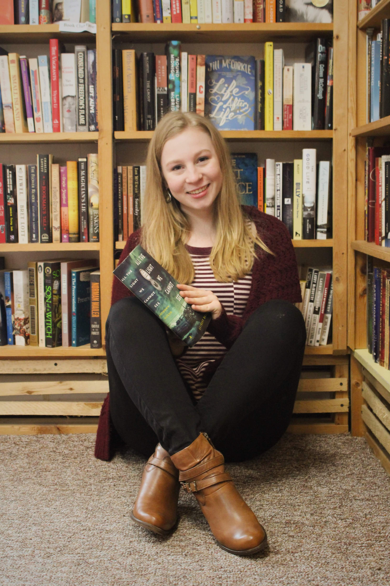

My name is Emilia, I am currently a junior in the School of Information at the University of Michigan. I fell in love with reading at a young age, and have always been amazed at the ability of a good book to transport readers into a completely different reality. I worked as an intern at a book store for two years and over that time I fell in learned that used books tell more stories than just the words on their pages. The condidtion, notes in margins, forgotten bookmarks of books reveal anthor layer of the stories they create. I decided that this year to help my bank account that I would only by 25¢, 50¢, and $1 books from thrift stores. This page tells some of the stories in the books that are now mine.